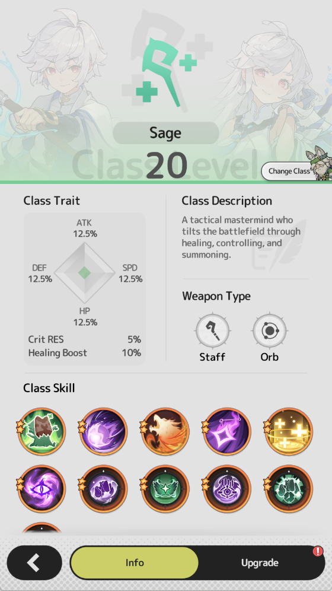
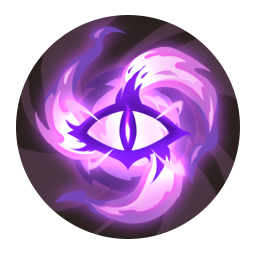
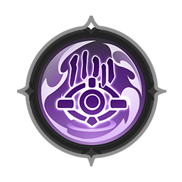
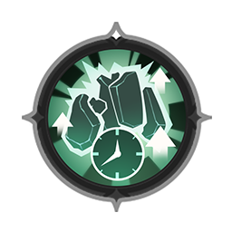
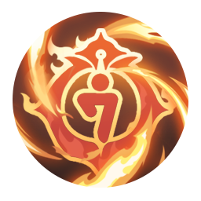
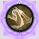

1. Bậc 2 — Hiền Giả (Sage • Cấp 44 Cinder Ridge)
Trị Liệu • Triệu Hồi • Lời NguyềnMột chiến lược gia làm chủ chiến trường bằng những khả năng và kỹ thuật chuyên biệt, xuất sắc trong việc xoay chuyển cán cân chiến thắng bằng các phép buff và debuff tài tình. Hiền Giả (Sage) đóng vai trò chỉ huy chiến trường, vừa có thể bao phủ đồng đội trong phước lành rạng rỡ của những lời cầu nguyện thánh thiện, vừa có thể trói buộc kẻ địch bằng những xiềng xích suy yếu của các lời nguyền xảo quyệt. Họ còn có thể chỉ huy các sinh vật totem huyền bí chiến đấu cùng mình, trở thành một đội quân một người. Một bậc thầy đa năng thực thụ của chiến trường và là người triệu hồi totem, họ dùng ánh sáng để chữa lành đồng minh và bóng tối để trừng phạt quân địch. (Kế thừa toàn bộ 26 kỹ năng gốc Pháp Sư — xem tại Hồ sơ Pháp Sư Bậc 1).



Bảng Chiến Kỹ Chủ Động — Hiền Giả (Sage Techniques) (6 kỹ năng)
| Icon | Tên Kỹ Năng | Phân Loại Tag | Mô Tả Cơ Chế Thực Chiến Chính Thức Trong Game |
|---|---|---|---|
| Treantling Summon | Triệu Hồi, Sát Thương | Triệu hồi một Treantling phía sau người thi triển, nó hành động ngay lập tức. Triệu hồi vật thừa hưởng một tỉ lệ chỉ số của người thi triển, nhưng không thể là mục tiêu chính của các đòn tấn công hoặc hồi máu. Nó tồn tại tối đa 5 lượt. (Không có hồi chiêu ban đầu) | |
 |
Shadow Impact | Sát Thương | Chọn 1 ô trong phạm vi 3 ô quanh người thi triển. Gây Sát Thương Bóng Tối 1 lần lên tất cả kẻ địch trong phạm vi 2 ô quanh ô mục tiêu đó. Nếu mục tiêu địch đang mang Ăn Mòn (Erosion), kích hoạt hiệu ứng Ăn Mòn ngay lập tức 2 lần. |
 |
Flame Wolf Summon | Triệu Hồi, Sát Thương | Triệu hồi 2 Flame Wolf phía trước người thi triển, chúng hành động ngay lập tức. Các triệu hồi vật thừa hưởng một tỉ lệ chỉ số của người thi triển, nhưng không thể là mục tiêu chính của các đòn tấn công hoặc hồi máu. Chúng tồn tại tối đa 2 lượt. (Không có hồi chiêu ban đầu) |
 |
Dark Bullet | Sát Thương, Debuff | Tấn công 1 kẻ địch trong phạm vi 4 ô quanh người thi triển, gây Sát Thương Bóng Tối 1 lần, với 50% tỉ lệ cơ bản gây Ăn Mòn (Erosion). |
 |
Radiant Restoration | Đồng Minh, Hồi Máu | Hồi máu cho tất cả đồng minh trong phạm vi 4 ô quanh người thi triển 1 lần. |
 |
Weakening Hex | Sát Thương, Debuff | Chọn 1 ô trong phạm vi 3 ô quanh người thi triển. Gây Sát Thương Bóng Tối 1 lần lên tất cả kẻ địch trong phạm vi 2 ô quanh ô mục tiêu, với 50% tỉ lệ cơ bản gây Suy Yếu (Weakened) 1 trong 2 lượt. |
Bảng Bí Thuật Bị Động — Hiền Giả (Sage Charms) (5 kỹ năng)
| Icon | Tên Kỹ Năng | Phân Loại Tag | Mô Tả Cơ Chế Thực Chiến Chính Thức Trong Game |
|---|---|---|---|
 |
Soul lmpact | Sát Thương | Khi triệu hồi vật của người thi triển chết hoặc hết hạn, gây Sát Thương Bóng Tối 1 lần lên tất cả kẻ địch trong phạm vi 2 ô quanh nó. |
 |
Resurrection | Đồng Minh, Hồi Sinh Buff, Hồi Máu | Khi một nhà thám hiểm đồng minh chết, ngay lập tức hồi sinh và hồi máu cho họ 1 lần, ban Hồi Sinh (Revitalization) trong 2 lượt (không thể bị giải trừ). Bùa này chỉ có thể kích hoạt 1 lần mỗi trận đấu. Khi bắt đầu trận đấu, nếu nhiều nhà thám hiểm đồng minh đã chết, hồi sinh người có Power cao nhất trước. |
 |
Shadow Erosion | Debuff, Sát Thương | Mỗi khi Kỹ Thuật của người thi triển gây Sát Thương Bóng Tối lên kẻ địch, có 40% tỉ lệ cơ bản gây Ăn Mòn (Erosion). |
 |
Soul Spark | Triệu Hồi, Chỉ Số | Tăng ATK của các triệu hồi vật của người thi triển nhưng giảm thời gian tồn tại của chúng 2 lượt. (Triệu hồi vật tồn tại ít nhất 1 lượt; Bùa này không ảnh hưởng tới triệu hồi vật không có giới hạn lượt.) |
 |
Healing Mastery | Chỉ Số | Cường hóa các hiệu ứng hồi máu của người thi triển. |
2. Bậc 3 → Bậc 7 — Bí Thuật Sư (Arcanist • Lv.82) → Thống Trị Giả → Tiên Tri → Hiền Vương
Hóa Thân Bóng Tối & Khiên Máu DưHãy sử dụng sức mạnh triệu hồi và bùa chú để làm chủ cục diện trận chiến! Dưới đây là bộ Chiến Kỹ & Bí Thuật Bậc 3–7 chuẩn xác của riêng nhánh Hỗ Trợ & Ám Thuật (gồm Hóa Thân Bóng Tối, Bóng Tối Chung Kết, Ánh Sáng Ảo Ảnh, Mưa Tái Sinh, Ám Tinh Bạo Phát...):
Bảng Chiến Kỹ Chủ Động Bậc 3–7 — Bí Thuật Sư / Thống Trị Giả / Tiên Tri (8 kỹ năng)
| Icon | Tên Kỹ Năng | Phân Loại Tag | Mô Tả Cơ Chế Thực Chiến Chính Thức Trong Game |
|---|---|---|---|
| Waterling Summon / Frenzy Totem" class="skill-wiki-icon" loading="lazy" /> | Triệu Hồi Thủy Linh & Cọc Cuồng Nộ Waterling Summon / Frenzy Totem |
Bậc 3 • Nước • T1 | [CD 1–2 • Triệu hồi hồi máu & cọc buff] Bộ đôi triệu hồi cốt lõi của Bí Thuật Sư hệ Trị Liệu: Thủy Linh hỗ trợ bơm máu theo lượt còn Cọc Cuồng Nộ cường hóa tốc độ/công kích vùng đứng. |
| Phantom Light" class="skill-wiki-icon" loading="lazy" /> |
Ánh Sáng Ảo Ảnh Phantom Light |
Bậc 4 • Ánh Sáng • T0 | [CD 2 • Máu hồi dư → Khiên] Tuyệt kỹ thay đổi cục diện Bậc 4: biến toàn bộ lượng máu bơm vượt quá cây máu đầy thành Khiên Chắn bảo vệ cả đội trước đòn nộ Boss! |
| Shadow of Termination" class="skill-wiki-icon" loading="lazy" /> | Bóng Tối Chung Kết Shadow of Termination |
Bậc 3–4 • Bóng Tối • T0 | [CD 2 • Kích nổ Xói Mòn] Đòn hành quyết của Bí Pháp Sư / Thống Trị Giả kích nổ tức thì các tầng Xói Mòn (Erosion) và mở Hóa Thân Bóng Tối giảm CD! |
 Rejuvenating Rain" class="skill-wiki-icon" loading="lazy" /> Rejuvenating Rain" class="skill-wiki-icon" loading="lazy" /> |
Mưa Tái Sinh Rejuvenating Rain |
Bậc 4 • Nước • T0.5 | [CD 2 • Mưa hồi máu theo lượt] Phủ mưa hồi phục diện rộng liên tục qua nhiều lượt kèm thanh tẩy nhẹ. |
| Dark Starburst" class="skill-wiki-icon" loading="lazy" /> | Ám Tinh Bạo Phát Dark Starburst |
Bậc 4 • Bóng Tối • T1 | [CD 1 • Nổ Ám Thuật trực diện] Gây sát thương Bóng Tối nổ thẳng không phụ thuộc vào xác suất gắn DoT, rất ổn định ở Mùa 2–3. |
 Chaos Rune" class="skill-wiki-icon" loading="lazy" /> |
Ấn Hỗn Mang Chaos Rune |
Bậc 4 • Bóng Tối • T1 | [CD 1–2 • Khắc ấn khuếch đại] Đặt cổ văn hỗn mang làm mục tiêu nhận thêm lượng lớn sát thương từ Bóng Tối Chung Kết. |
| Abyssal Hand" class="skill-wiki-icon" loading="lazy" /> | Bàn Tay Vực Thẳm Abyssal Hand |
Bậc 3 • Bóng Tối • T1 | [CD 1 lượt • Giữ chân + Làm Chậm] Hồi chiêu cực nhanh 1 lượt, trói kẹp và Làm Chậm đám đông quái vật trong vùng sát thương. |
 Water Spirit Summon" class="skill-wiki-icon" loading="lazy" /> |
Hoán Linh Thủy Yêu Water Spirit Summon |
Bậc 6 • Nước • T0.5 | [CD 2 • Triệu hồi Thủy Linh hỗ trợ] Triệu hồi Thủy Linh vừa hồi máu vừa bổ trợ sát thương phép liên tục cho cả đội hình Triệu Hồi và Trị Liệu. |
Bảng Bí Thuật Bị Động Bậc 3–7 — Bí Thuật Sư / Thống Trị Giả / Tiên Tri (9 kỹ năng)
| Icon | Tên Kỹ Năng | Phân Loại Tag | Mô Tả Cơ Chế Thực Chiến Chính Thức Trong Game |
|---|---|---|---|
| Shadow Erosion" class="skill-wiki-icon" loading="lazy" /> | Xói Mòn Bóng Tối Shadow Erosion |
Bậc 3 • Bóng Tối • T0.5 | [Nội tại • Nhân hệ số DoT] Nội tại trụ cột nhân mạnh sát thương rút máu Bóng Tối mỗi lượt (yêu cầu đầu tư Chính Xác Hiệu Ứng). |
| Aberrancy" class="skill-wiki-icon" loading="lazy" /> | Dị Biến Nguyền Rủa Aberrancy |
Bậc 5 • Bóng Tối • T0.5 | [Nội tại Bậc 5 • Giảm ST địch dính xấu] Bí thuật trấn phái của Tiên Tri (Prophet): cắt giảm mạnh sát thương gây ra từ mọi kẻ địch đang mang hiệu ứng bất lợi/nguyền rủa! |
 Linked Misfortune / Night's Blessing" class="skill-wiki-icon" loading="lazy" /> Linked Misfortune / Night's Blessing" class="skill-wiki-icon" loading="lazy" /> |
Họa Phúc Khôn Lường & Đêm Chúc Phúc Linked Misfortune / Night's Blessing |
Bậc 4 • Bóng Tối • T1 | [Nội tại • Lan ST & +Ám Thuật] Kết nối sinh mệnh truyền sát thương giữa lũ quái và tăng trực tiếp % sát thương hệ Tối. |
| Shadow Vengeance / Soul Impact" class="skill-wiki-icon" loading="lazy" /> |
Ám Báo Thù & Chấn Động Linh Hồn Shadow Vengeance / Soul Impact |
Bậc 3–4 • Bóng Tối • T2 | [Nội tại • Phản/Cộng dồn Ám] Tăng cường sát thương trả đòn và cộng hưởng tầng hiệu ứng xấu. |
| Curse-Shadow Chain" class="skill-wiki-icon" loading="lazy" /> | Chú Ảnh Liên Hoàn Curse-Shadow Chain |
Bậc 7 • Bóng Tối • T0.5 | [Nội tại Bậc 7 • Kích nổ phụ theo Debuff] Cơ chế mới Bậc 7 của Toàn Tri Hiền Vương: mỗi khi tung kỹ năng gây hiệu ứng bất lợi đều kích hoạt chuỗi sát thương phụ không cần đồng đội. |
| Summon Deathrattle" class="skill-wiki-icon" loading="lazy" /> | Hoán Linh Vong Ngữ Summon Deathrattle |
Bậc 7 • Bóng Tối • T1 | [Nội tại Bậc 7 • Khiên cho Đệ vĩnh viễn] Mỗi khi sinh vật triệu hồi hy sinh, lập tức chuyển hóa thành lớp Khiên dày bảo vệ các triệu hồi vĩnh viễn như Viêm Long / Tinh Linh Cây. |
| Summon Frenzy" class="skill-wiki-icon" loading="lazy" /> | Hoán Linh Cuồng Bạo Summon Frenzy |
Bậc 6 • Lửa • T1 | [Nội tại • Tăng Tốc & ST Đệ tử] Đẩy tốc độ ra đòn và sát thương của toàn bộ quân đoàn triệu hồi (Sói Lửa, Viêm Long, Tinh Linh Cây). |
| Overheal Mastery / True Word Blessing" class="skill-wiki-icon" loading="lazy" /> |
Siêu Lượng Trị Liệu & Chân Ngôn Chúc Phúc Overheal Mastery / True Word Blessing |
Bậc 6 • Ánh Sáng • T0 | [Nội tại • Bơm Khiên & Búp đội] Bộ đôi bí thuật Bậc 6 của Chân Lý Hiền Vương giúp mọi lượng hồi máu dư biến thành giáp ảo bảo vệ đội trước Boss 28M+ sát thương. |
| Soulpact Heal / Spirit Ward" class="skill-wiki-icon" loading="lazy" /> |
Linh Khế Liệu Dũ & Linh Năng Tí Hựu Soulpact Heal / Spirit Ward |
Bậc 6 • Ánh Sáng • T1 | [Nội tại • Giảm ST đồng đội] Củng cố sức sống cho đội hình 4 người khi càn quét các tầng cao nhất của Khe Nứt Hư Không và Hỏa Quốc Ignis. |